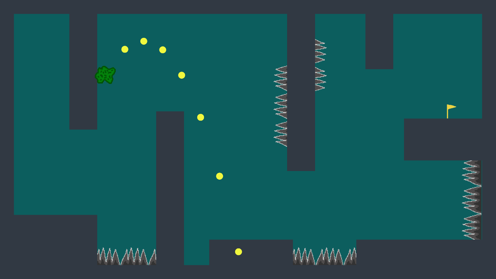

Sewer Escape code

GameManager Script
using System.Collections;
using System.Collections.Generic;
using UnityEngine;
public class GameManager : MonoBehaviour
{
#region Singleton class: GameManager
public static GameManager Instance;
private void Awake()
{
if (Instance == null)
{
Instance = this;
}
}
#endregion
private Camera cam;
public PlayerScript player;
public Trajectory trajcetory;
[SerializeField]
private GameObject winText;
[SerializeField]
private GameObject loseText;
[SerializeField]
private float pushForce = 4f;
[SerializeField]
private float distance;
[SerializeField]
private float maxDistance = 30;
bool isDragging = false;
Vector2 startPoint;
Vector2 endPoint;
Vector2 direction;
Vector2 force;
private void Start()
{
cam = Camera.main;
}
private void Update()
{
if (!player.isTouchingGoal)
{
if (Input.GetMouseButtonDown(0))
{
isDragging = true;
OnDragStart();
Debug.Log("mouseDown");
}
if (Input.GetMouseButtonUp(0))
{
isDragging = false;
OnDragEnd();
}
if (isDragging)
{
OnDrag();
}
}
else
{
winText.SetActive(true);
}
if (player.playerHealth <= 0)
{
loseText.SetActive(true);
}
}
public void OnDragStart()
{
startPoint = cam.ScreenToWorldPoint(Input.mousePosition);
trajcetory.Show();
}
public void OnDrag()
{
endPoint = cam.ScreenToWorldPoint(Input.mousePosition);
distance = Vector2.Distance(startPoint, endPoint);
direction = (startPoint - endPoint).normalized;
if (distance >= maxDistance)
{
distance = maxDistance;
}
force = direction * distance * pushForce;
Debug.DrawLine(startPoint, endPoint);
trajcetory.UpdateDots(player.playerPos, force);
}
public void OnDragEnd()
{
player.ActivateRb();
player.Push(force);
trajcetory.Hide();
}
}
Trajectory Srcript
using System.Collections;
using System.Collections.Generic;
using UnityEngine;
public class Trajectory : MonoBehaviour
{
[SerializeField]
private int dotsNumber = 30;
[SerializeField]
private float dotSpacing = 0.2f;
private float timeStamp;
[SerializeField]
private GameObject dotsParent;
[SerializeField]
private GameObject dotsPrefab;
Transform[] dotsList;
Vector2 pos;
private void Start()
{
Hide();
PrepareDots();
}
public void PrepareDots()
{
dotsList = new Transform[dotsNumber];
for (int i = 0; i < dotsNumber; i++)
{
dotsList[i] = Instantiate(dotsPrefab, null).transform;
dotsList[i].parent = dotsParent.transform;
}
}
public void UpdateDots(Vector3 playerPos, Vector2 forceApplied)
{
timeStamp = dotSpacing;
for (int i = 0; i < dotsNumber; i++)
{
pos.x = (playerPos.x + forceApplied.x * timeStamp);
pos.y = (playerPos.y + forceApplied.y * timeStamp) - (Physics2D.gravity.magnitude * timeStamp * timeStamp) / 2f;
dotsList[i].position = pos;
timeStamp += dotSpacing;
}
}
public void Show()
{
dotsParent.SetActive(true);
}
public void Hide()
{
dotsParent.SetActive(false);
}
}
Player Srcript
using System.Collections;
using System.Collections.Generic;
using UnityEngine;
public class PlayerScript : MonoBehaviour
{
private Rigidbody2D rb;
private CircleCollider2D col;
public bool isTouchingGround = true;
public bool isTouchingGoal = false;
public Vector3 playerPos
{
get { return transform.position; }
}
private void Awake()
{
rb = GetComponent();
col = GetComponent();
isTouchingGoal = false;
}
public void Push(Vector2 force)
{
if (isTouchingGround == true)
{
rb.AddForce(force, ForceMode2D.Impulse);
}
}
public void ActivateRb()
{
rb.constraints = RigidbodyConstraints2D.None;
rb.isKinematic = false;
}
public void DeActivateRb()
{
rb.velocity = Vector3.zero;
rb.angularVelocity = 0f;
rb.isKinematic = true;
}
private void OnCollisionEnter2D(Collision2D collision)
{
rb.constraints = RigidbodyConstraints2D.FreezeAll;
isTouchingGround = true;
}
private void OnCollisionExit2D(Collision2D collision)
{
isTouchingGround = false;
}
private void OnTriggerEnter2D(Collider2D collision)
{
if (collision.tag == "spike")
{
Dead();
}
if (collision.tag == "Goal")
{
Finish();
}
}
private void Dead()
{
Destroy(gameObject);
Debug.Log("You died");
}
private void Finish()
{
isTouchingGoal = true;
Debug.Log("You won!");
}
}